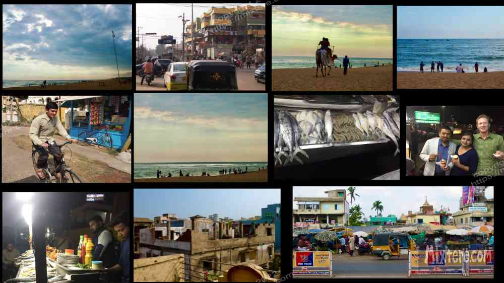
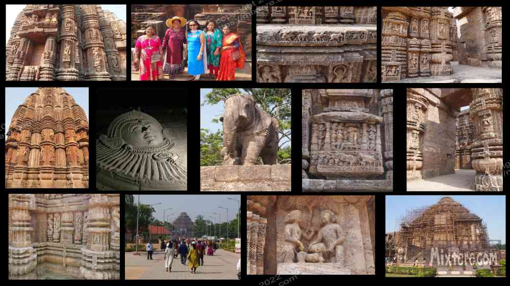

Soon I was underway on a train traveling south through West Bengal and then along the east coast to Puri, Odisha. It was a pleasant ride. In time the lush landscape gave way to dry red earth yet humidity remained. I met a brother and sister on the train that were headed for Lord Jagganath Hindu temple. I believe this is the main destination for most [Hindu] travelers to Puri. The brother and sister were friendly and we had a nice exchange on the train. We rattled through the night and reached our destination by late morning the following day. Waking from your sleeper berth to the slowing unfolding land is a quintessential Indian experience. A sort of bonding happens with the others in your car with some miles behind you on your journey together.
At the time I held considerable nostalgia for Puri. I had traveled there in late December upon completing Antioch's Buddhist Studies program in 1996. Returning now, I noticed how the place had changed. The town had expanded as well as dilapidated in the time that had passed. It had gradually made a transition from catering to many Western tourists to focusing almost exclusively on Indian pilgrims and tourists. A lot of the hotels that had been shiny and new and well-kept during my first visit had gotten run-down in the 23 years that I had been absent. Some had closed altogether. Now, the hotels catered more to the Indian taste and wallet, which estranged me from the town. It was the same situation at the restaurants that served the Hindu pilgrims, people that came to “pray and play” on the sand. These large, loud groups of Indians thronged the lanes of the city, their cars honking and blasting through the streets at high speeds.
I stayed at the (for me) relatively upscale Indian Hotel Shanti Kunji for 800 rupees per night. This was costly but closer to my budget goal, around 9 dollars. The room was nice and clean and offered a large balcony to sit on and catch the moist breezes of the Bay of Bengal. I used to sit there and observe a small family of monkeys that regularly traversed the rooftops. The sight of monkeys roaming free was still a novel thing that thrilled me.
I thought I was pretty well prepared for the experience of the beach at Puri. I wasn’t expecting unspoiled, white sand beaches or ladies in bikinis. I have an affinity for the sea; wanted to be near it and swim in it. Being from a beach town I found it eerie that there were no wave, kite or windsurfers nor swimmer or single stand-up paddler in the water. For a country surrounded by ocean there were surprisingly few watermen and women to be found. As usual, the only ones in the water were the fishermen. For the most part everyone else could not and did not swim. Seeing them floundering, fulling clothed even in a sari in thigh deep water, worried me.
I was back on the main part of the subcontinent and on the well-traveled paths. Away from the distinctly different, reserved Assamese ways, I was quickly reminded that this was India in the digital age. So me going to the beach meant being approached for selfies by packs of visitors over and over again. At first I went with this but in time I grew to resent this invasion and sometimes decided against a trip to the beach. The hardest was when people I didn't know would immediately begin streaming a video call to their friends and train their camera on me, without even asking. Cultural differences can be difficult.
Here, in Puri, I was at a transition point in my journey. Instead of exploring and looking for adventure I was returning to a place to rest and relax. I sought the familiar but often did not find it. Twenty three years had passed since I had been here. After a few days a discomforting restlessness set in. As a non-Hindu I was barred from entering Lord Jaganath temple. I had no transport and walked to whatever places I could in the warm sun. One day started to blend into another and I slid into a stagnant purposelessness. This often happens when one stopped jaunting about, distracting oneself seeking sights and basic needs. I was wrestling with what my purpose was in India now that I had lost the drive for adventure (and hardship). Even now, two months after I had returned to Bodh Gaya, the wound of my disappointment of what I did not find waiting for me there still smarted. That, after all, was what had inspired my heart to return to India.
In a couple of days I ran into the brother and sister from the train at a hotel not far from mine. They invited to take me to “Big Beach” to have some fried fish. A day later we did so. Other than the temple, "Big Beach” is the epicenter of Indian tourism in Puri as far as I can tell. There, after nightfall, a number of fish-fryers had set up shop. In front of their mobile kitchens they proudly displayed the day’s catch on beds of crushed ice. There were fish of all sizes and shapes as well as prawns and lobster. The brother, the older of the siblings, took initiative and ordered for us. Soon we were handed our freshly fried fish on a paper plate. At that point I was still reforming myself into a proper Indian traveler. I would not normally have ordered fried fish from the roadside. Professor Robert, the man originally tasked with orienting me and my fellow students, had cautioned us against ordering fried foods from street stalls as the oil used was often rancid. But the brother and sister insisted that it was safe so I dug in. That fried fish was a special treat.
A group of dogs eyed our dinner from the outskirts of the fish fry. In their eyes was the familiar, pleading look that can be so effective. We finished up our fish and went next door for an ice cream. This was also something I had been cautioned against in Bihar due to it often being melted and refrozen a number of times. But again I was told it was safe. The fresh fish and cool ice cream made for the best meal I had had in a very long time. After eating we cruised around the beach a bit. The sister went for a ride on a camel right there on the beach. Then we hopped in a cab and went back to our respective hotels and said goodnight. For a while I was in touch with the sister but eventually we drifted apart.
One day I took the local bus about forty minutes to Chandrabhaga beach and the Konrak Sun Temple. The temple was impressive and embellished with naughtiness. So much work was done to create it for likely many years. I did my best to attempt to try to capture a bit of this in my photos but they could never really do a proper job. If you look closely you can see… there are some pretty blatantly erotic images portrayed. I was amazed with how explicit so much of it is. You can almost hear a soundtrack going something like "Waka waka wow wow." I don’t know the proper history to give you regarding this temple, but some hedonistic culture had once been present there.

About a five minute rickshaw ride from the temple was an International Sand Sculpture competition at Chandrabhaga Beach. I love the beach and so figured I may as well see the artists at work. They were from all over the globe. I had not known there was a professional contingent of sand-castle makers. They definitely surpassed my crude techniques from childhood.
I lingered and continued to feel lost in Puri. Still I did not yet have the gumption to strike out on my next adventure- if it could even be called that anymore. Eventually the doldrums of sitting around got to me and one day I walked to the train station and bought a ticket south to Pondicherry. It was an old French colony that promised the chance to go surfing. I figured it would be worth a visit. Just before I left I tried out a 400 rupee room at another guesthouse that was alright and about a ten minute walk to the beach. At the time that was about $6 for your own room and bathroom. I don’t know if there are any other places in the world that can top that. Soon I was happily saying goodbye to Puri, a place where I had lingered too long. I was excited to be boarding the train and getting moving again.
Right-click below to open in new tab

Click below for next chapter